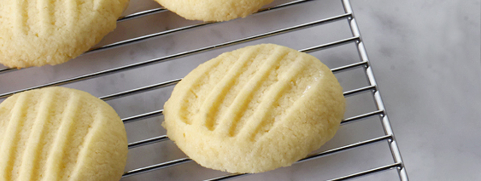

Shortbread Cookies!
Serves: 36
Ingredients
- 1 cup unsalted butter at room temperature
- ½ cup plus 2 Tbsp icing sugar
- ¼ cup cornstarch or rice flour
- 1 ½ cup all purpose flour
- ½ tsp salt
- 1 tsp vanilla extract
Directions
- Preheat oven to 350 °F.
- Beat butter until light and fluffy. Sift in icing sugar and beat again until fluffy, scraping down sides of the bowl often.
- Sift in cornstarch or rice flour and blend in.
- Sift in all purpose flour and salt and mix until dough comes together (it will be soft). Stir in vanilla
- Spoon large teaspoonfuls of cookie dough (or use a small ice cream scoop) onto an un-greased cookie sheet, leaving 2 inches between cookies.
- Bake for 18 to 20 minutes, until bottoms brown lightly. Remove from cookie sheet to cool.

Credits: Adapted from "Shortbread Cookies," - Food Network, Courtesy of Anna Olson